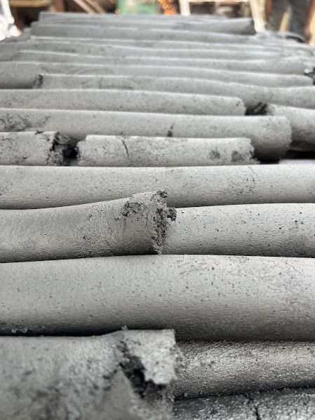
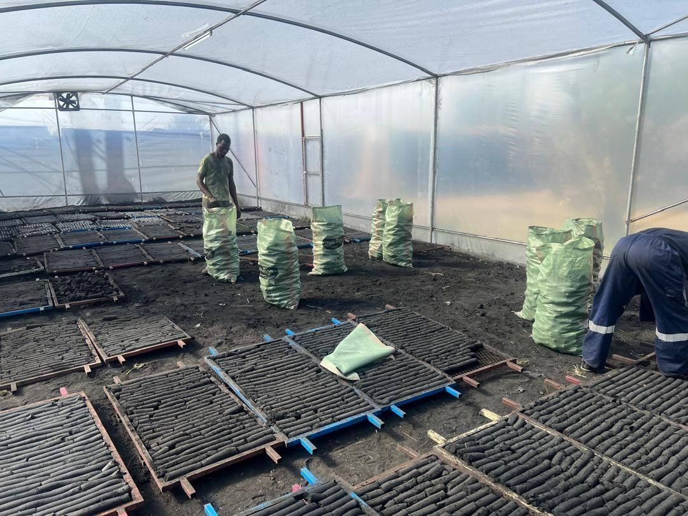

Our mission
To make clean cooking fuel affordable and easy to get for every kitchen, from the mama ntilie to the school canteen.
 Loading EcoPower website
Loading EcoPower websiteAbout EcoPower

EcoPower Solutions Limited started in 2023. We make Makange briquettes at our factory on Old Bagamoyo Road, Silver Sands, Kunduchi, using tailor-made machines that meet industry standards and give a premium output. Our cargo tricycles deliver to homes, food sellers and institutions across Dar es Salaam, together with our WAKALA partners and sales agents.
To make clean cooking fuel affordable and easy to get for every kitchen, from the mama ntilie to the school canteen.
Clean energy for every Tanzanian home.
From a small charcoal wood seller to a working factory with its own delivery fleet
We sold wood charcoal and saw its cost to families and forests. We began pressing briquettes from char dust and farm waste, by hand, in Kunduchi.
Food sellers came back each week. Independent tests confirmed a long, steady burn.
Rain, power cuts and unrest slowed us down, but we kept going. We added our first delivery tricycle and our first WAKALA shop.
Machines now press, mix and dry our fuel. Three tricycles deliver across the city, agents sell Makange in their neighbourhoods, and we build our own stoves.
 1. Collect and mix
1. Collect and mixChar dust, agro and forest waste blended with a binder in our mixer.

2. PressPressed into long briquettes by our machine.

3. Dry and packDried on trays in our solar dryer, then packed in 25kg and 50kg sacks.
 4. Deliver
4. DeliverNext day, by our own Toyo crew.
From selling charcoal to making a cleaner fuel for Tanzanian kitchens.
Meet the team